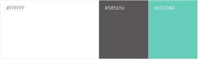

フレッシュで爽やかなイメージを伝えるため、ベースカラーを緑に設定しました。
構成上テキストが多くなりがちな点を考慮し、単調にならないように、イラストの挿入やフォントの変化でメリハリをつけました。視認性を高めたい情報はサンセリフ体、見出しやメニューにはデザイン性のあるセリフ体を採用しています。
各所に設計したホバーアニメーションでは、ポートフォリオとしての個性と情報整理の両立を心がけました。
[配色]
企画 / ワイヤーフレーム
1週間
デザイン
5日
コーディング
2週間